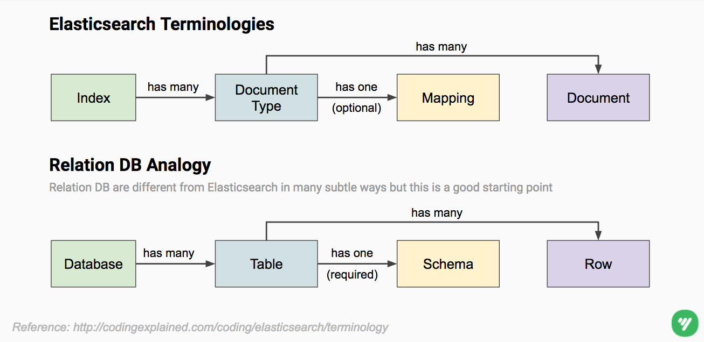
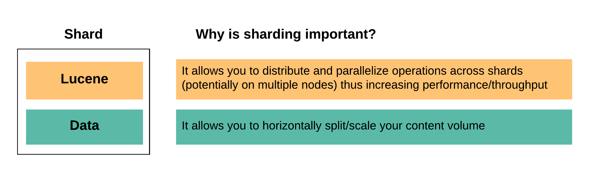

class: center, middle

# {{page.title}}

Jiaming Zhang

{{page.date | date_to_string }}

---
{% raw %}
# Recap



---
# Recap

Launch Elasticsearch (ES) and [Kibana](https://www.elastic.co/products/kibana) (a visualization tool for ES) locally

```sh
brew install elasticsearch

# Automatically start Elasticsearch when log in
# By default, Elasticsearch will be available at http://localhost:9200
brew services start elasticsearch

###################################

brew install kibana

# Automatically start Kibana when log in
# By default, Kibana will be available at http://localhost:5601
brew services start kibana

###################################

# Verify whether both service is started
brew services list | grep -E "elasticsearch|kibana"
```

---
layout:true


# Shards

---


---

Each shard is in itself a **fully-functional** and **independent** "index" that can be hosted on any node in the cluster.



.footnote[
Reference: https://www.elastic.co/guide/en/elasticsearch/reference/current/_basic_concepts.html
]

---

Create index **entity_companies** w/ default settings

```javascript
PUT /entity_companies
```

--

Get index **entity_companies** metadata

```javascript
GET _cat/indices/entity_companies?v&h=health,index,pri,rep

health index            pri rep
yellow entity_companies   5   1
```

--

By default, an index has 5 primary shards and 1 replica.

---

- Example: Can set up # of primary shards and # of replicate
- Example: Update # of replicate
- Example: Can't update # of primary shards? Why? So how to do (reindex)

---

.question[How many data can an index store?]

--

.answer[
It depends on
- **\# of primary shards**
    - Max # of documents a shard can have is bounded by
      max # of documents a Lucene index can have (around 2 billions). [1]
- **Hardware** (e.g. # of nodes, disk space, CPU)
- **Document size**
- **Use case** (e.g. query, expected response time)
]

[1] https://www.elastic.co/guide/en/elasticsearch/reference/current/_basic_concepts.html

???

Examples
1. 100GB data, 2 nodes w/ 80GB disk space, 1 primary shard (bounded by # of primary shards)
2. 100GB data, 1 node w/ 80GB disk space, 3 primary shards (bounded by # of nodes)
3. 10GB data, 1 nodes w/ 100GB disk space and 20MB disk IO/sec, 3 primary shard, use case requires 40MB disk IO/sec

---

A Elasticsearch cluster has 3 indices. Here is the setting for one of them:

```javascript
# Index: entity_companies
{
    "number_of_primary_shards": 3,
    "number_of_replicas": 2
}
```

.question[How many shards does the cluster has?]
--

.answer[It also depends on the other two indices.]
--


.question[How many shards does this index has?]
--

.answer[It also depends on # of nodes the cluster has.]

--

.question[How many shards does this index expects to has?]
--

.answer[**9 shards** = 3 primary shards * (1 origin + 2 replicas) ]


{% endraw %}

